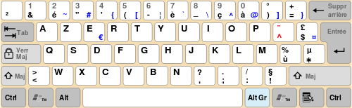
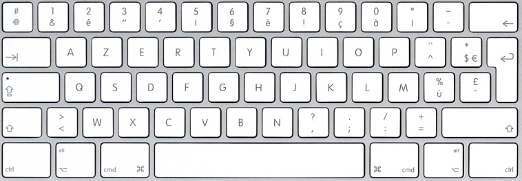

AZERTY is a specific layout for the characters of the Latin alphabet on typewriter keys and computer keyboards.
The layout takes its name from the first six letters to appear on the first row of alphabetical keys. It is used by most French speakers based in Europe.

To configure your keyboard to use a different language or keyboard layout, use the appropriate method for your version of Windows.
Click Start button, type intl.cpl in the Start Search box, and then press ENTER.
On the Keyboards and Language tab, click Change keyboards.
Click Add.
Expand the language that you want. For example, expand English (United States).
Expand Keyboard list, select the United States-International check box, and then click OK.
In the Default input language list, click English (United States) - United States-International.
In the Regional and Language Options dialog box, click OK.
Notice that the Language bar appears on the taskbar. When you position the mouse pointer over it, a ToolTip appears that describes the active keyboard layout.
Click the Language bar, and then click United States-International on the shortcut menu that appears.
The United States-International keyboard layout is selected.
You can configure your keyboard to use different language and keyboard formats. You can add multiple keyboard layouts and switch between them when needed. Use the following steps to add a language, set a default language, and switch between keyboard layouts:
Add a keyboard language:
Click the Start Start menu and select Settings.
Select Time & language.
Click Region & language in the left column.
Select Add a language.
Choose the language you want to add and select a country for the language.
Set a default keyboard layout:
Click the Start Start menu and select Settings.
Select Time & language.
Click Region & language in the left column.
Under Languages click the language you want as default and click Set as default.
Switch keyboard layouts:
Method 1:
Click the language name in the lower right.
Select the keyboard layout you want to use.
Method 2:
Press and hold the Windows key while you press the Space bar to change the language.
To configure your keyboard to use a different language or keyboard layout, use the appropriate method for your version of Windows.
Click Start, type intl.cpl in the Run box, and then press ENTER.
On the Languages tab, click Details.
Under Installed services, click Add.
In the Input language list, click the language that you want. For example, English (United States).
In the Keyboard layout/IME list, click United States-International, and then click OK.
In the Select one of the installed input languages to use when you start your computer list, click English (United States) - United States-International, and then click OK.
In the Regional and Language Options dialog box, click OK.
Notice that the Language bar appears on the taskbar. When you position the mouse pointer over it, a ToolTip appears that describes the active keyboard layout. For example, United States-International appears.
Click the Language bar, and then click United States-International on the shortcut menu that appears.
The United States-International keyboard layout is selected.
Try this:
Apple > system prefs > Language & text > input sources.
Check only English
Or, if your system is set up to allow multiple languages, there might be a Flag of the language in the system notification tray, click on it then select English...
Finally, pressing Command+Space will move to the next language, Command+Option+Space will move back.

Type here to see if the problem is solved